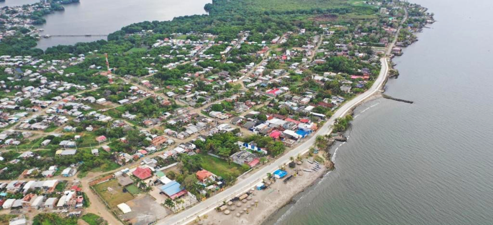

EL PEQUEÑO PUEBLO
El municipio de Turbo es un municipio pequeño, donde la gente se conoce no importa que tan lejoos vivas, los Turbeños se caracterizan por se alegres y capaces de hacer todo.
Este pueblo o mejor llamado, distrito. Es el foco de Colombia porque se ha convertido en un distrito de puertos.

Conocer mas de Trubo